课程资料
https://pan.baidu.com/s/1jsCMuuOUsgT5WezDevGp9A&pwd=9988
第一章
ps快速体验
打开">
- 让天空和山变清晰
选择套索工具
选中模糊的地方
注意: PS的AI功能在国内禁用
- 添加logo
文件 -> 打开
变换工具, 左键按住并拖动logo图((logo图是png, 一定要点到logo主体, 不要点到背景, 否则拖不了)), 拖到风景图tag,
然后ps自动切换到风景图, 此时继续拖到风景图内, 然后放开鼠标左键就可以复制logo图到风景图了
文件 -> 存储为副本
做设计, 一般保存两个格式, 一个是ps的psd格式, 一个是jpeg格式
保存副本后这位老师他不保存退出了
- 发给客户确认
如果客户不满意, 要修改, 应该点开哪个文件((格式))去修改? 文件 -> 打开
jpeg不方便二次修改, 所以要点开psd格式的文件去修改
- 回顾课程内容
地铁海报合成案例 - 自由变换功能
- 开始
ctrl+O 打开图片
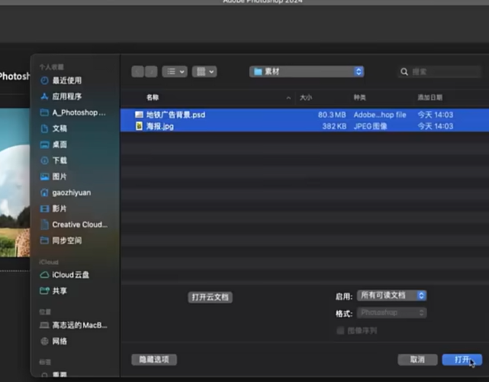
左键拖动海报到地铁图
- 变换
编辑->自由变换 ((快捷键ctrl+t, 经常用到))
ctrl+t后出现可操作的小点
左键点击小点拖动, 等比例变换大小
左键在四个顶点外, 变成弧形图标的位置, 点击可以旋转; 旋转时按住shift, 可以整数变换角度((15°))
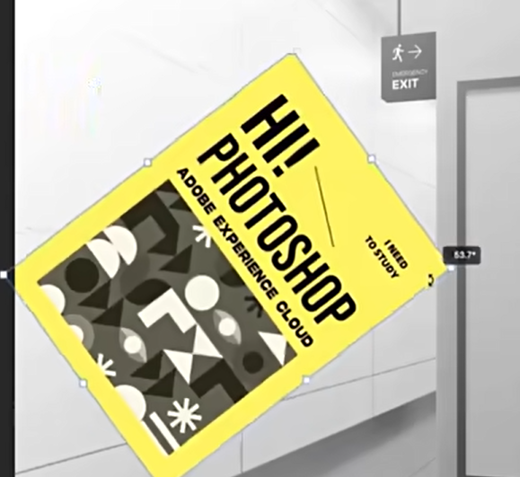
ctrl+t出现小点后, 上方栏位也出现了新的属性栏, 可以自定义旋转角度和其他属性
按住shift键, 才能非等比改变大小
斜切, 鼠标放到任意一条边, 点击拖动, 变成平行四边形 ((刚刚的两个操作是缩放和旋转))
扭曲
透视((近大远小)), 透视默认等边变换, 可以配合扭曲调整效果
提交变换
用扭曲完成效果, 然后把高光放到最上面的图层, 防止海报图层盖住了高光效果
- 课程回顾
- 作业

微软品牌logo案例
文件->打开
左侧工具栏->选择工具
矩形选框工具->点击一处然后拖动 同时按shift->松开鼠标左键
按住i键->鼠标变成吸管样式->点击颜色取色->左边工具栏的前景色变成了刚刚取的颜色
选区选中时, 按alt+退格((<-backspace))键, 填充前景色
问题->刚刚直接把颜色填充到背景, 背景是锁定的, 无法移动修改, 应该新建图层, 然后填充颜色((ctrl+shift+n新建图层,
ctrl+z撤销操作))
新建图层
选区也可以移动
选区->填色->还未取消选区->复制图层, 选区还在->i+左键复制前景色->alt+backspace填充前景色
抽象书籍封面案例 - 上
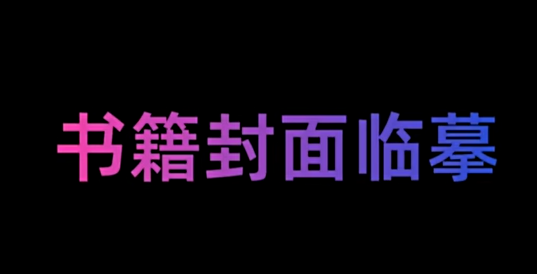
- 选区编辑像素
圆形选区->delete删除
半圆
月亮型
饼状
如果只想保留选区内的内容, 可以ctrl+shift+i反选, 然后delete删除
- 临摹
打开造型图和素材
选区工具->固定大小->输入尺寸->左键点击空白处->出现固定大小的选区
i吸色, 填充选区
新建选区500500, 新建图层, 填色
圆形选区->固定大小 500500->左键点击空白处->出现固定大小的选区
圆形选区->固定大小 1000*1000->左键点击空白处->出现固定大小的选区
矩形选区->delete半圆
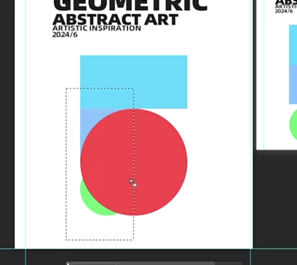
建立图层组, 双击改名
抽象书籍封面案例 - 下: 将设计套入样机 合成样机
大部分免费的样机下载网站
先把封面保存为jpg
打开样机
样机模板层这里, 最左边的图层的右下角的图案, 一般这种图案表示是样机中可以编辑的地方
双击该图层
文件->打开之前设计的封面->拖动到样机中->拖动到合适位置->保存
看看保存后样机发生了变化
样机如果没有, 可以去某宝或某多多买, 几块钱一大堆
- 课程收获
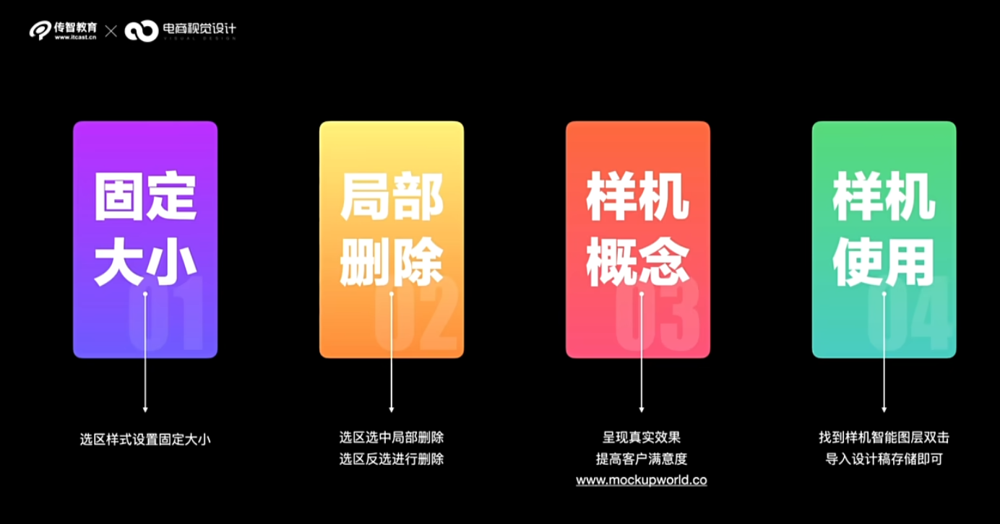
抽象艺术画案例
- 渐变填充
ps预设了很多渐变, 也可以自定义渐变
线性渐变 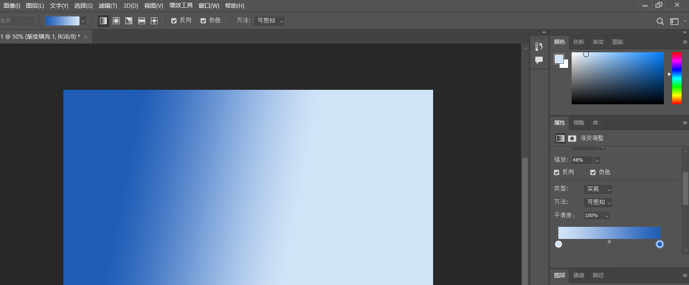
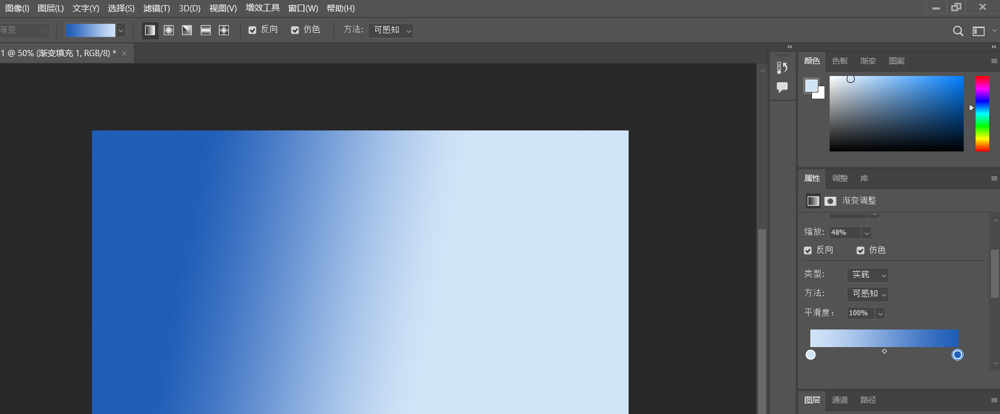
径向渐变，从中心向外渐变
其他的渐变不怎么用
这两个不需要改，默认就好
选区->渐变 也是可以的
基础渐变->1. 前景色到背景色;2. 前景色到透明((可以用作高光));3. 黑白
- 案例

ctrl+R拉参考线, 参考线拉到中间, 然后画个大点的圆
点击图层区空白处, 然后渐变工具((深色->透明))在选区中拉渐变
选择移动工具, 按住alt键移动复制出刚才的圆
选择图层, 选择渐变, 更改渐变, 然后反向
导入logo和文字
导入样机, 找到智能对象图层, 双击
打开刚才做好的图, 拖入样机智能图层, 图片小了, 按ctrl+t改变一下((可以按住shift, 不按比例变换)), 然后保存
样机改变了
- 总结
风景插画设计
天空
文件->打开->左下角可以看到文件大小->新建画布
从后((远景))开始临摹
吸管((i))工具点击时按住alt, 可以吸取颜色到背景色
圆形选区填充白色((alt+backspace)), 可以画星星
新建图层, 画圆, 填充白色, 再画圆, 然后覆盖一部分白圆, 删除一部分白色圆
山脉
右侧的色板tag下可以记录15个使用过的颜色
多边形套索选择选区, 然后填充颜色
盖印, 把下面所有显示的图层合并, 放到新的图层, 不影响原来的图层
打开样机, 双击智能图层, 将盖印图层拖动到样机图层, 如果图大小不合适就ctrl+t改变, 然后保存样机智能图层修改, 就能看到样机改变
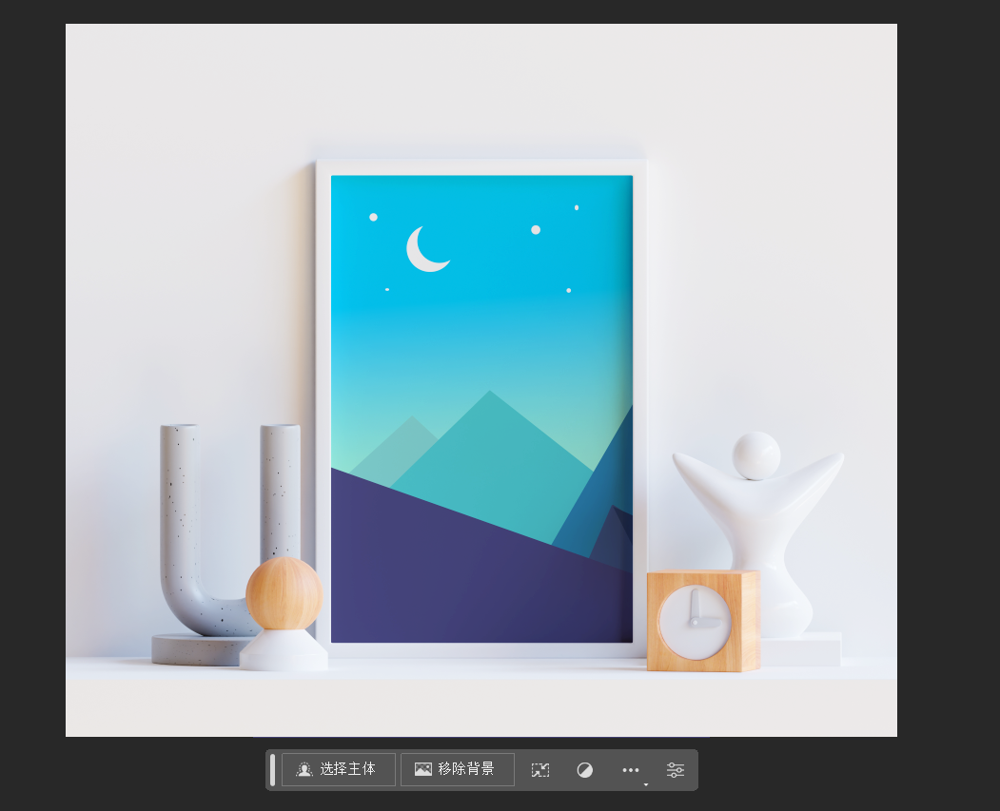
作业

第二章
多边形扣取建筑大楼
多边形套索适合扣取棱角分明的图
ctrl+j, 将选区内的内容复制到新图层
抠图
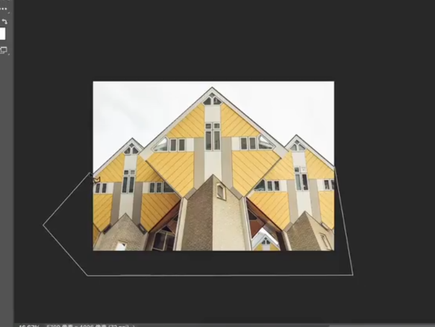
ctrl+j, 拖动扣下的图到蓝天白云图, ctrl+t变换大小
快速选择工具抠图讲解
快速选择工具
[键可以缩小快速选择工具的圈, ]可以放大
选择岩石和人
快速选择可以减少选择, 我们需要把人腿之间的空隙取消选择, 最后ctrl+j新建图层
黑人案例
修边 去掉">
智能移除背景工具
ai智能去背景
点击 移除背景 直接去除, 注意图片的主体的边缘要清晰效果才好
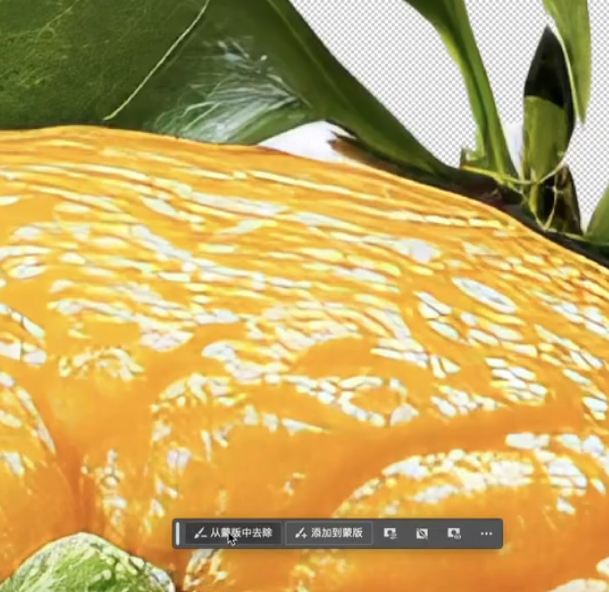
案例
魔棒工具
单色背景抠图
案例
选择并遮住功能

学习
动物的毛, 人的头发这种算毛发类
纯色背景的毛发类图用选择并遮住来扣图效果很好
案例
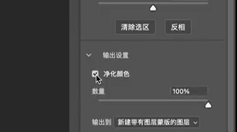
钢笔工具

快速选择工具扣边界不清晰的图效果不好, 钢笔工具好一点, 一般扣产品图
少扣一两个像素可以, 但是多扣了就会有白边, 不好看
扣不是直边的图, 点击下锚点的时候, 按住左键拖动((会出现控制手柄, 左侧控制当前线弧度, 右侧控制未来线弧度)), 让辅助线和边贴合
综合案例

新建
第三章
形状图层
形状图层可以被路径选择工具选中路径
形状图层可以双击图层改变颜色
形状图层放大缩小不会变糊((变换大小不失真))
形状圆角属性
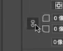
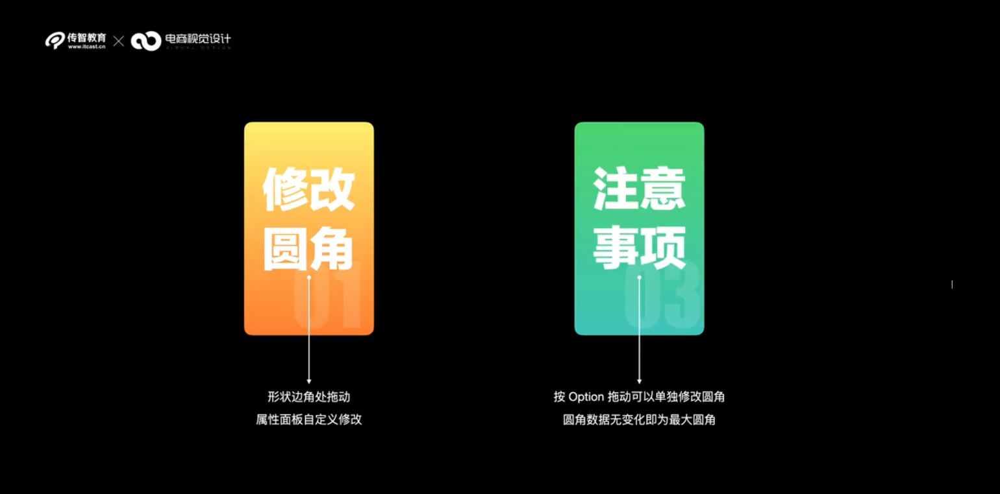
直接选择工具与锚点编辑
学习
创建矩形图案, 切换 直接选择工具 , 矩形出现四个锚点, 点击拖动可以改变形状
钢笔工具->添加锚点工具 可以添加锚点
转换点工具, 可以切换锚点 平滑或尖锐
临摹

形状渐变填充
学

临摹
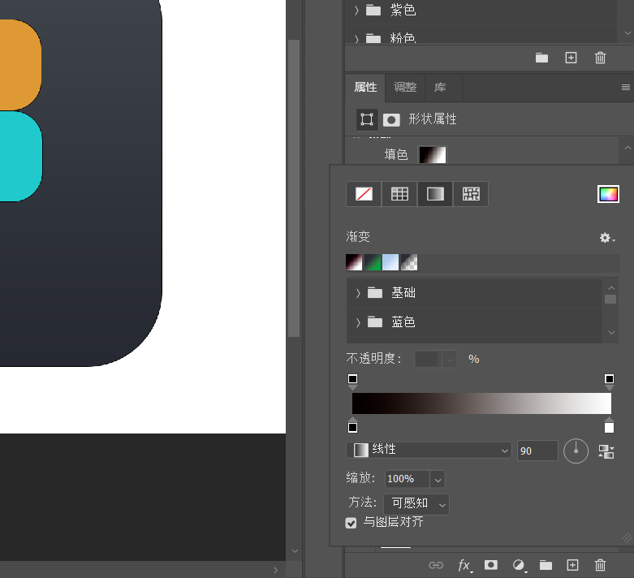